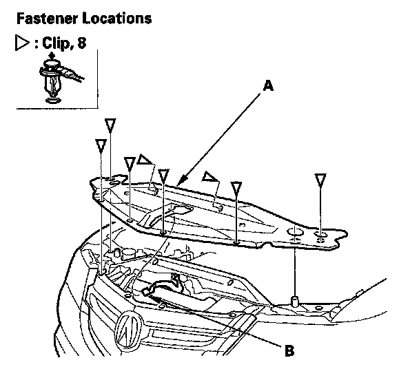

Front Bulkhead Cover
Front Bulkhead Cover ReplacementNOTE: Take care not to scratch the front bumper and body.

1. Remove the front bulkhead cover (A).
1. Remove the clips.
2. Pass the hood latch knob (B) through the hole in the cover.
2. Install the cover in the reverse order of removal, and note these items:
- If the clips are damaged or stress-whitened, replace them with new ones.
- Push the clips into place securely.